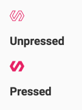

Now that you're familiar with the basic layout of the element, add something useful to its local DOM template.
Find the <span> below the local DOM goes here comment:
<!-- local DOM goes here -->
<span>Not much here yet.</span>
</template>
Replace the <span> and its contents with the <iron-icon> tag below:
<!-- local DOM goes here -->
<iron-icon icon="polymer"></iron-icon>
</template>
<iron-icon> element is a custom element that renders an icon. Here it's hard-coded to use an icon named "polymer".There are a number of new CSS selectors to work with local DOM. The icon-toggle.html file already includes a :host selector, discussed earlier, to style the top-level
<icon-toggle> element.
To style the <iron-icon> element, add the following CSS inside the <style> tag after the existing content:
<style>
/* local styles go here */
:host {
display: inline-block;
}
iron-icon {
fill: rgba(0,0,0,0);
stroke: currentcolor;
}
:host([pressed]) iron-icon {
fill: currentcolor;
}
</style>
<iron-icon> tag uses an SVG icon. The fill and stroke properties are SVG-specific CSS properties. They set the fill color and the outline color for the icon, respectively.:host() function matches the host element if the selector inside the parentheses matches the host element. In this case,[pressed]is a standard CSS attribute selector, so this rule matches when the icon-toggle has a pressed attribute set on it.Your custom element definition should now look like this:
<link rel="import" href="../polymer/polymer.html">
<link rel="import" href="../iron-icon/iron-icon.html">
<dom-module id="icon-toggle">
<template>
<style>
/* local styles go here */
:host {
display: inline-block;
}
iron-icon {
fill: rgba(0,0,0,0);
stroke: currentcolor;
}
:host([pressed]) iron-icon {
fill: currentcolor;
}
</style>
<!-- local DOM goes here -->
<iron-icon icon="polymer"></iron-icon>
</template>
<script>
Polymer({
is: 'icon-toggle'
});
</script>
</dom-module>
You'll notice that one toggle is styled as pressed, because the pressed attribute is set in the demo. But click all you want, the button won't toggle yet; there's no code to change the pressed property.